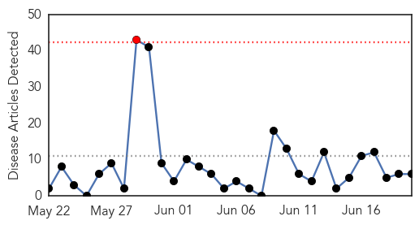

30 Day Trends
Web: 1 alerts, 0 warnings
Twitter: 0 alerts, 0 warnings
Top Articles:
- 0.991
- Nearly 340 Measles Cases Now Reported In Nine Ohio Counties
- 0.966
- Measles, Mumps Outbreaks Growing
- 0.910
- Walgreens offers measles vaccine in Ohio
- 0.863
- Encephalitis cases could peak this or next month: CDC
- 0.763
- Taiwan sees seventeenth measles case of the year
- 0.621
- Junk Science Week: Vaccinating the ‘herd’
Top Tweets:
-
No tweets found for Jun 20, 2014
Web/News Articles
Tweets

Article Locations